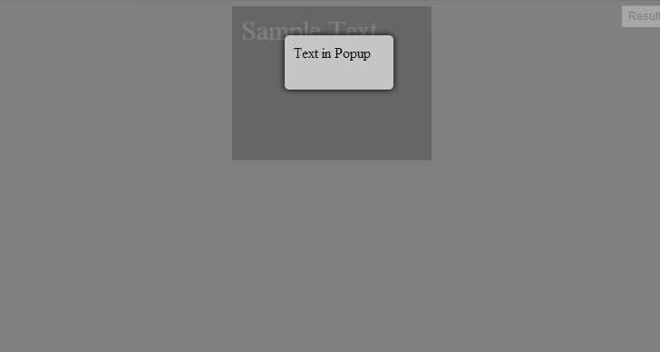

как же сделать на своем сайте всплывающее окно PopUp.
Постановка задачи(ТЗ)
Необходимо создать поверх всего сайта всплывающее окно с затемнением экрана.
Решение
Способ 1
html
<div class="b-container">
Sample Text
</div>
<div class="b-popup">
<div class="b-popup-content">
Text in Popup
</div>
</div>
css
*{
font-family: Areal;
}
.b-container{
width:200px;
height:150px;
background-color: #ccc;
margin:0px auto;
padding:10px;
font-size:30px;
color: #fff;
}
.b-popup{
width:100%;
height: 2000px;
background-color: rgba(0,0,0,0.5);
overflow:hidden;
position:fixed;
top:0px;
}
.b-popup .b-popup-content{
margin:40px auto 0px auto;
width:100px;
height: 40px;
padding:10px;
background-color: #c5c5c5;
border-radius:5px;
box-shadow: 0px 0px 10px #000;
}
Результат:

Очень часто предлагают использовать:
position:absolute;
Да, результат получается аналогичный, но из-за того, что у нас задана высота блока «затемнения», появляются полосы прокрутки. Именно поэтому такой метод не подходит.
Способ 2
Этот способ не отличается кардинально от Способа 1, но я считаю его более удобным.
Html (без изменений)
<div class="b-container">
Sample Text
</div>
<div class="b-popup">
<div class="b-popup-content">
Text in Popup
</div>
</div>
Css
*{
font-family: Areal;
}
.b-container{
width:200px;
height:150px;
background-color: #ccc;
margin:0px auto;
padding:10px;
font-size:30px;
color: #fff;
}
.b-popup{
width:100%;
min-height:100%;
background-color: rgba(0,0,0,0.5);
overflow:hidden;
position:fixed;
top:0px;
}
.b-popup .b-popup-content{
margin:40px auto 0px auto;
width:100px;
height: 40px;
padding:10px;
background-color: #c5c5c5;
border-radius:5px;
box-shadow: 0px 0px 10px #000;
}
Результат аналогичный
Благодаря свойству: min-height:100%; наш блок «затемнение» обрел ширину в 100% и минимальную высоту в 100% экрана.
Единственным минусом данного способа является то, что Internet Explorer поддерживает данное свойство только с версии 8.0.
Добавление магии на Jquery
Теперь добавим ссылки для скрытия/отображение нашего всплывающего окна.
Для этого необходимо подключить библиотеку JQuery и небольшой скрипт:
<script src="http://code.jquery.com/jquery-2.0.2.min.js"></script>
<script>
$(document).ready(function(){
//Скрыть PopUp при загрузке страницы
PopUpHide();
});
//Функция отображения PopUp
function PopUpShow(){
$("#popup1").show();
}
//Функция скрытия PopUp
function PopUpHide(){
$("#popup1").hide();
}
</script>
Также необходимо обновить Html:
<div class="b-container">
Sample Text
<a href="javascript:PopUpShow()">Show popup</a>
</div>
<div class="b-popup" id="popup1">
<div class="b-popup-content">
Text in Popup
<a href="javascript:PopUpHide()">Hide popup</a>
</div>
</div>
Результат
Теперь при загрузке страницы всплывающее окно PopUp скроется.
Если мы нажмем на ссылку «Show popup», у нас появится всплывающее окно. А если нажать на ссылку «Hide popup», то всплывающее окно вновь скроется.
Результат можно посмотреть тут: http://jsfiddle.net/p7NbX/15/